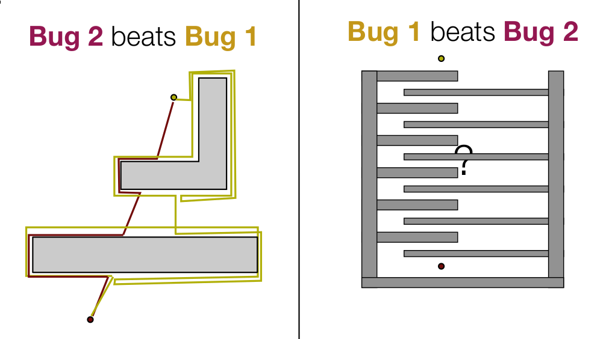

Bug Algorithms
Bug 1
Algorithm:
- head toward goal
- if an obstacle is encountered, circumnavigate it and remember how close you get to the goal
- return to that closest point (by wall-following) and continue
comments
- exhaustive search
- lower bound,
- upper bound, , where is the perimeter of the obstacle
Bug 2
Algorithm:
- head toward goal on the m-line
- if an obstacle is in the way, follow it until you encounter the m-line again closer to the goal.
- leave the obstacle and continue toward the goal
comments
- greedy search, tries to optimize by following -line
- lower bound,
- upper bound, , where is the perimeter of the obstacle and is the number of times the -line intersects the obstacle *
Comparison
